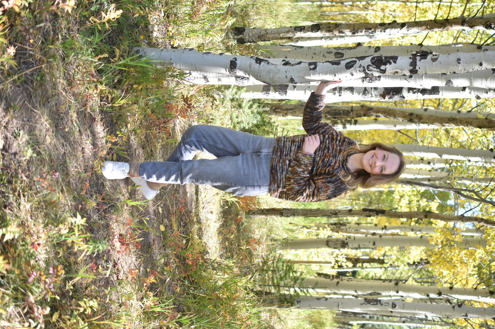

I'm seeking opportunities in spaces where innovation is measured by positive impact. I'm especially interested in tools that support sustainability, accessibility, and education. I have a background in visual and performing arts, and am passionate about supporting the humanities.
With 10+ years of experience creating user-centered digital experiences, I bring a background in visual communication, UX-focused design, front-end development, and technical project management. My approach combines design and technical knowledge to create intuitive, accessible, and visually engaging products.
I'm a lifelong learner with a curiosity that spans a wide range of subjects, from the Medieval era and archaeology to paleontology, Japanese, and astronomy. I'm currently reading Dinosaurs: A Concise Natural History and enjoy dabbling in astrophotography whenever I can. Photographing the 2017 total solar eclipse was a particular highlight! When I'm not exploring a new interest, I can usually be found at my desk watching YouTube, knitting a sweater, with a cat curled up nearby.
Contact